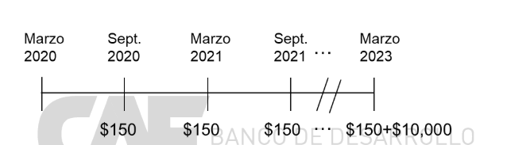

Un bono es un título emitido (normalmente, por gobiernos y empresas) para conseguir dinero hoy a cambio de la promesa de unos pagos futuros - en este sentido funciona de la misma manera que un préstamo bancario (con lo que todo lo que digamos sobre valoración de bonos, se aplica a prestamos).
En el mercado primario, un gobierno o una empresa puede emitir una gran cantidad de bonos para conseguir financiación de inversores que comprarán esos bonos a cambio de recibir una rentabilidad futura, que será función de los pagos prometidos.
Toda la información necesaria para entender el bono se especifica en el certificado de bono o contrato de emisión.
Además, se pueden especificar muchas otras condiciones y cláusulas que pueden hacer la emisión de bonos más atractiva para los inversores.
Los contratos de bonos son documentos detallados que especifican la tasa de interés (fija o variable), la frecuencia de los pagos del cupón, el vencimiento del bono, condiciones especiales como garantías, cláusulas de rescate y convertibilidad, y las obligaciones del emisor hacia los tenedores de los bonos.
El contrato de bono especifica también el registro de los tenedores y las garantías de los pagos, que pueden incluir activos específicos como colaterales o estructuras de pago prioritarias en caso de insolvencia del emisor.
Los bonos se valoran descontando los flujos de efectivo futuros que se espera que genere el bono (pagos de cupones y el valor nominal) al presente, utilizando una tasa de descuento que refleja el riesgo asociado con el bono. Las fórmulas y métodos exactos pueden variar dependiendo del tipo de bono y las condiciones del mercado.
La valoración de un bono está influenciada por el riesgo de crédito del emisor, la duración del bono, la liquidez del mercado y las condiciones económicas generales que afectan las tasas de interés del mercado.
El YTM es una medida crucial que refleja la rentabilidad total que se espera obtener de un bono si se mantiene hasta su vencimiento, teniendo en cuenta tanto los pagos del cupón como cualquier ganancia o pérdida de capital que ocurra al vencimiento. Este indicador es vital para comparar la rentabilidad de diferentes bonos.
El YTM se calcula igualando el precio actual del bono a la suma de todos sus flujos de caja futuros descontados. Esto requiere un análisis detallado y puede necesitar el uso de software financiero o calculadoras especializadas para resolver la ecuación de valoración.
Un bono a 10 años tiene un valor nominal de $10,000 y un interés nominal del cupón del 5.5%, que se paga semestralmente.
Es 10 de marzo de 2018. El Tesoro Público ha emitido títulos con vencimiento en marzo de 2023. El nominal de los bonos es de $10,000 y el tipo de interés nominal (cupón) es del 3% anual pagado en cupones semestrales. El primer cupón, por lo tanto, se paga el 10 de septiembre de 2018. Representa la estructura de flujos de caja que recibiría un inversor si conservara el bono hasta el vencimiento.
La información que describe el bono es suficiente para entender toda la secuencia de flujos de caja. El bono paga un cupón anual de 3% × $10,000 = $300, pero al ser pagados semestralmente los cupones son de $150 cada semestre. Los cupones se pagan el 10 de septiembre y el 10 de marzo de cada año, y en cinco años (ya que el bono vence en marzo de 2023) se pagará el nominal junto al último cupón.
